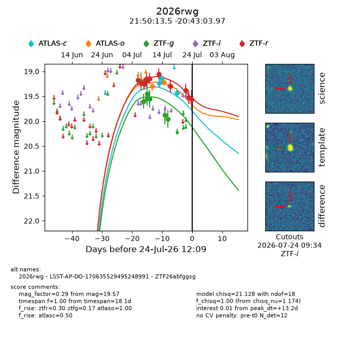
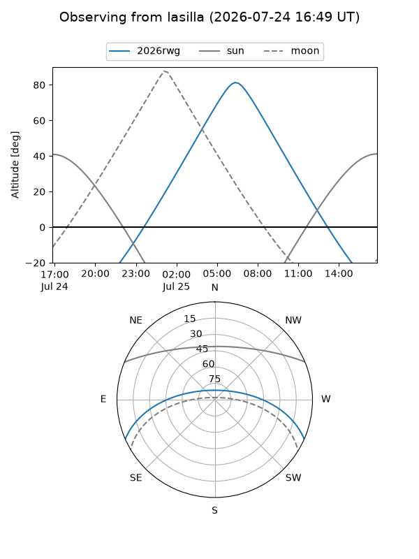
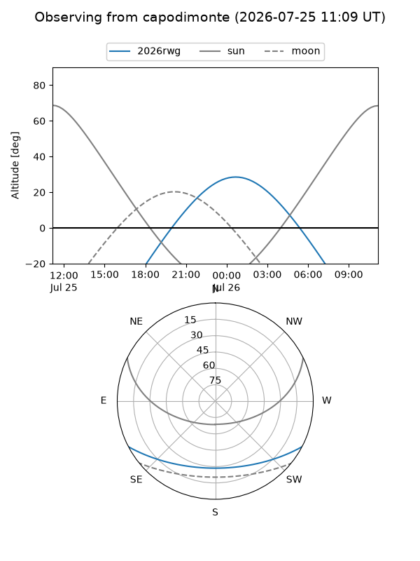
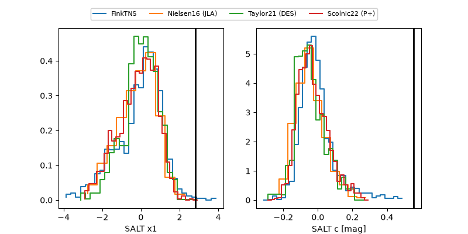

2026rwg
Target 2026rwg at 2026-07-24 12:11
Aliases and brokers:
FINK-ZTF: ztf.fink-portal.org/ZTF26abfggsg
Lasair-ZTF: lasair-ztf.lsst.ac.uk/objects/ZTF26abfggsg
ALeRCE-ZTF: alerce.online/object/ZTF26abfggsg
YSE-PZ: ziggy.ucolick.org/yse/transient_detail/2026rwg
TNS name: wis-tns.org/object/2026rwg
Direct TNS query: direct search
alt names
ZTF26abfggsg (ztf,fink_ztf)
2026rwg (tns,yse)
LSST-AP-DO-170635529495248991 (iau_lsst)
Coordinates:
equatorial (ra, dec) = 327.5562,-20.71777
equatorial (HMS+DMS) = 21:50:13.48,-20:43:03.97
galactic (l, b) = (31.6509,-48.31465)
Flags:
TNS type: nan
peak dt: +13.2
Photometry:
last atlasc=19.43, atlaso=19.21, ztfg=19.96, ztfr=19.57
3 atlasc, 2 atlaso, 7 ztfg, 11 ztfr detections
Lightcurve

Visibility


Additional plots
